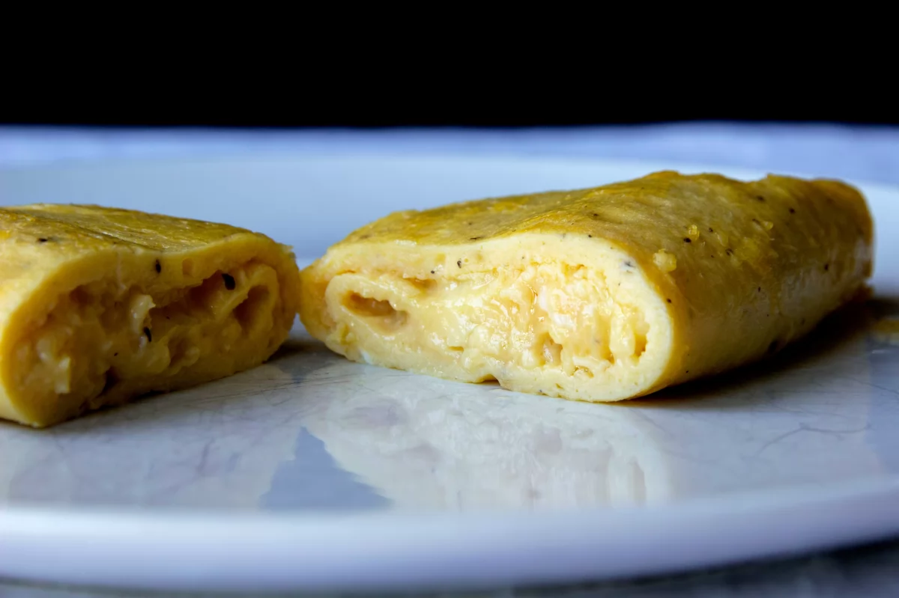

Tortilla Francesa

La tortilla francesa no deja de ser una omelette.
Una receta muy sencilla, perfecta para una cena rápida
cuando nos falta tiempo o ideas para algo más elaborado.
| Cant |
Producto |
| 3 |
Huevos |
| 5 ml |
Nata fresca |
| 10 g |
Manteca |
| 1 pizca |
Sal |
| 1 pizca |
Pimienta |
Preparación
- Chascar los huevos en un bol, salpimentar y añadirle un poquito de nata fresca (esto es opcional
pero le da una cremosidad extra a nuestra tortilla).
- El siguiente paso será poner la sartén al fuego, en una temperatura media.
Echar un poco de mantequilla a la sartén y cuando empieza a chisporrotear
añadir los huevos batidos y bajar la temperatura al mínimo que vaya
cocinando poco a poco y se separe bien del fondo después.
- Es el momento de formar la tortilla, separar la tortilla de los bordes de la sartén.
Así que vamos levantando de uno de los lados y lo llevamos hacia la mitad de la tortilla.
- Damos unos golpes en el mango para que se nos levante del otro lado hacia nosotros y
cerramos con cuidado los lados de la tortilla hacia el centro.
- La tortilla bien ejecutada tendrá que tener una capa exterior no muy gruesa y el interior cremoso.